|
| - Загрузка негатива Файл в формате TIFF загружаем в Photoshop |
||
| - Коррекция черной точки Данный этап зачастую именуется как "вычитание маски", что не является верным определением данного процесса. Добавляем к изображению "Adjustment Layer" типа Levels. Выбираем пипетку "белая точка" и щелкаем на неэкспонированной части кадра. Для увеличения точности пробы неэкспонированный участок можно предварительно "размыть" при помощи операции Blur. В идеале правые маркеры на канальных гистограмах R, G и B должны находится посередине самых правых пиков, ссответствующих неэкспонированным участкам пленки. Полученные установки слаедует сохранить, они могут быть использованы для всех кадров данной пленки сканированных с неизменной экспозицией. Рекомендация: экспозиция должна быть выбрана таковой, что бы пики, ссответствующие неэкспонированным участкам пленки, были смещены максимально вправо. Подробнее... 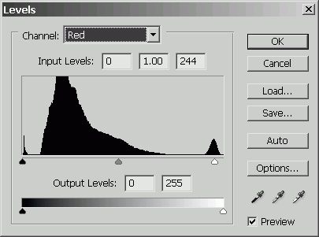 |
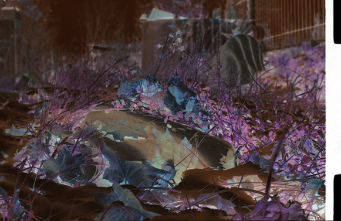 | |
| - Инверсия негативного изображения в позитивное Операция Invert программы Photoshop совершенно не пригодна для этой цели ибо, по сути, она является операцией вычитания и нарушает линейность изображения.
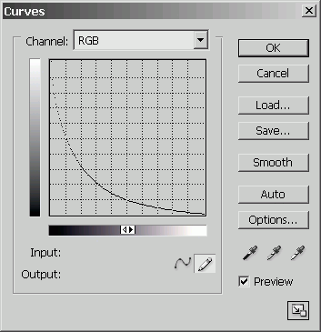 |
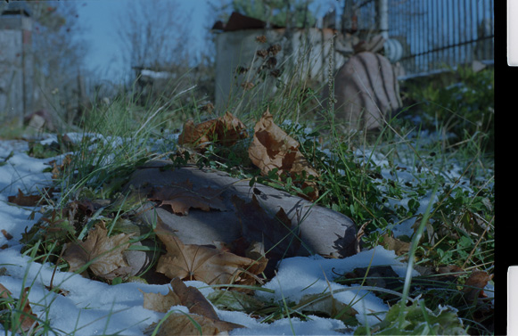 | |
| - Баланс белого Добавляем к изображению "Adjustment Layer" типа Levels. Если в изобржении есть точка, которую можно признать за максимально белую, то просто выбираем пипетку "белая точка" и применяем её в данной области. Но обычно такой точки нет, поэтому будем делать иначе: в каналах R, G и B сдвигаем правые ползунки влево до появления пересветов, это удобно делать удерживая кнопку Alt, затем понемногу возвращаем их вправо добиваясь нужного баланса белого и яркости самых светлых участков. 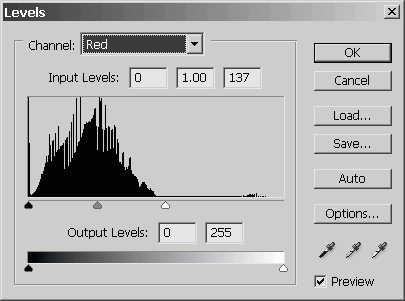 После всех этих настроек слоев изображение может выглядеть несколько странно и иметь следы постеризации. Этого не следует пугаться. Подробнее... |
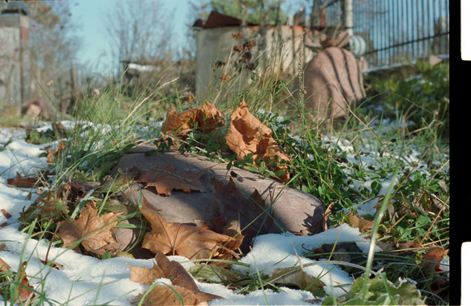 | |
| - Применение профиля Операцией "Assign profile" устанавливаем профиль сканера. Если у нас есть возможность построить профиль самому, то строим его по it8 мишени, сканируя её с гаммой 2.2, такой профиль будет минимально влиять на яркость и только корректировать цвета. После этого шага, возможно, будет необходимо уточнить баланс белого. |
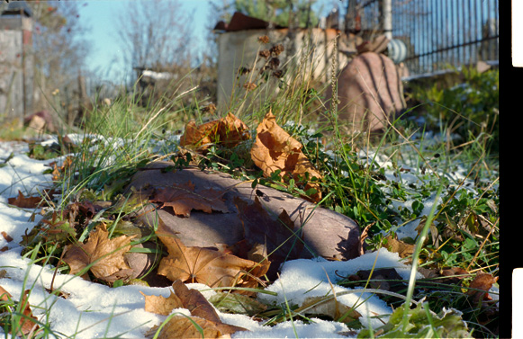 | |
| - Установка гаммы Это уже чистой воды искуство и о нем лучше почитать Дена Маргулиса. Я добавил слой "Adjustment Layer" типа Levels только в целях приведения всех изображений к одному и тому же виду. |
| Негатив, полученный после сканирования, выглядит более светлым, видимо, программа сканирования применила к нему гамму со значением от 1.8 до 2.2. | 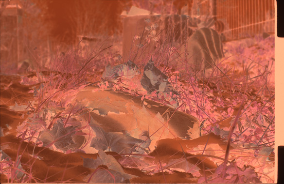 |
| Результат обработки. | 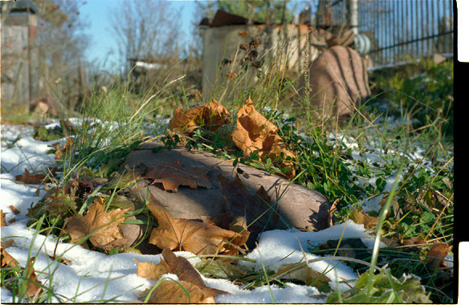 |
| Результат обработки с компенсирующей гаммой 0.56 ( 1/1.8 ), примененной к негативному изобржению. | 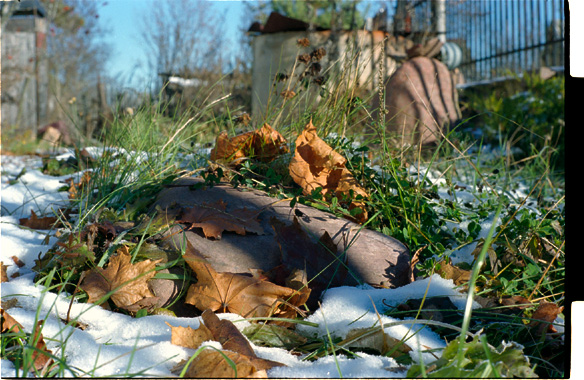 |
| Сканирование с автоматическим конвертированием програмой NikonScan с гаммой 1 и последующей коррекцией гаммой 1.6. | 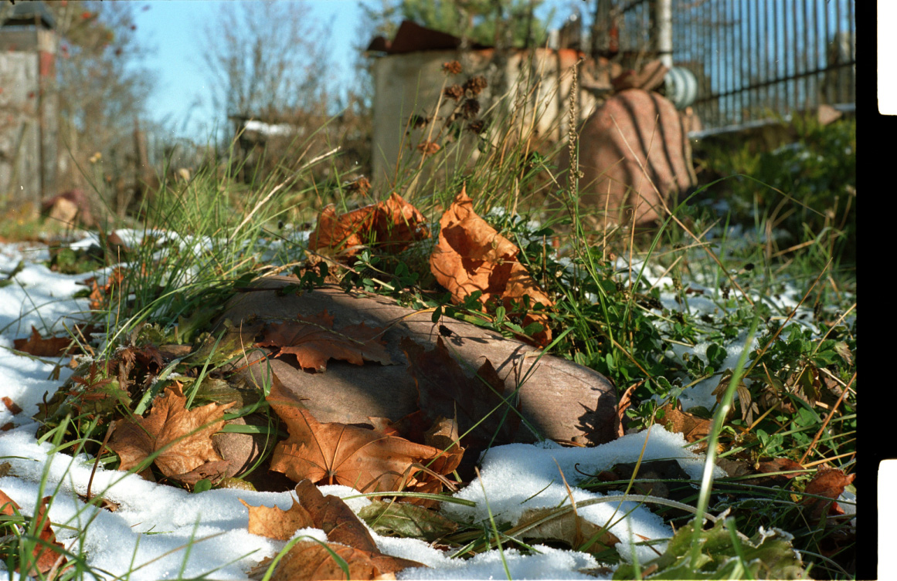 |
| Авторская (SergT) обработка кадра с автоматическим конвертированием програмой NikonScan: обработанный кадр (2 скана с гаммой 2.2: + 0.04 и - 0.4, сложенные в ФШ, curves). | 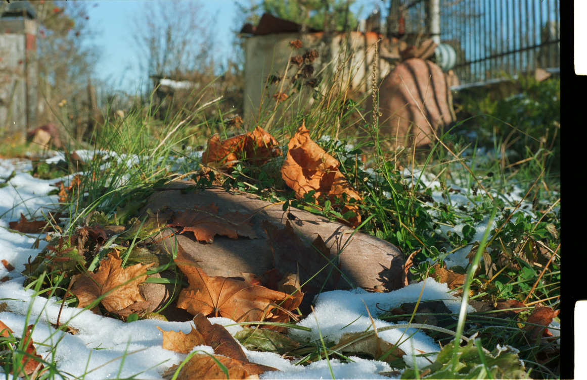 |
| Результат по данной методике. | 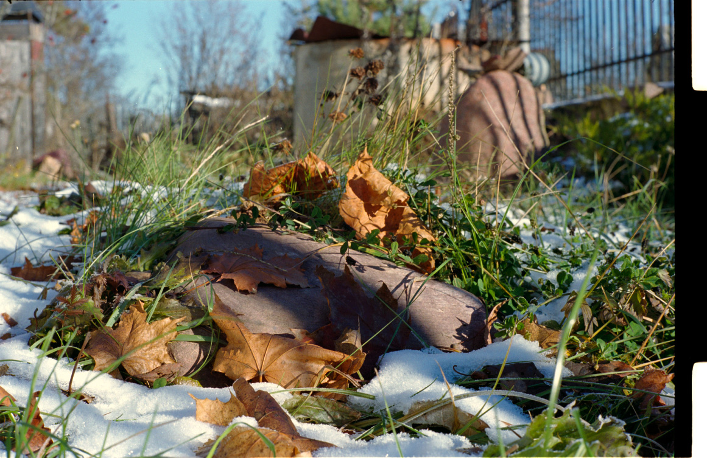 |
All contents copyright © vgrin, first published December 8, 2005. Ver 2.01, December 6, 2021